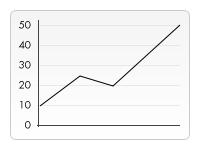

操作图像
canvas更有意思的一项特性就是图像操作能力。可以用于动态的图像合成或者作为图形的背景，以及游戏界面（Sprites）等等。浏览器支持的任意格式的外部图片都可以使用，比如PNG、GIF或者JPEG。 你甚至可以将同一个页面中其他canvas元素生成的图片作为图片源。
引入图像到canvas里需要以下两步基本操作：
获得一个指向HTMLImageElement的对象或者另一个canvas元素的引用作为源，也可以通过提供一个URL的方式来使用图片（参见例子）
使用drawImage()函数将图片绘制到画布上
我们来看看具体是怎么做的。
获得需要绘制的图片
canvas的API可以使用下面这些类型中的一种作为图片的源：
HTMLImageElement
这些图片是由Image()函数构造出来的，或者任何的<img>元素
HTMLVideoElement
用一个HTML的 <video>元素作为你的图片源，可以从视频中抓取当前帧作为一个图像
HTMLCanvasElement
可以使用另一个 <canvas> 元素作为你的图片源。
ImageBitmap
这是一个高性能的位图，可以低延迟地绘制，它可以从上述的所有源以及其它几种源中生成。
这些源统一由 CanvasImageSource类型来引用。
有几种方式可以获取到我们需要在canvas上使用的图片。
使用相同页面内的图片
我们可以通过下列方法的一种来获得与canvas相同页面内的图片的引用：
- document.images集合
- document.getElementsByTagName()方法
- 如果你知道你想使用的指定图片的ID，你可以用document.getElementById()获得这个图片
使用其它域名下的图片
在 HTMLImageElement上使用crossOrigin属性，你可以请求加载其它域名上的图片。如果图片的服务器允许跨域访问这个图片，那么你可以使用这个图片而不污染canvas，否则，使用这个图片将会污染canvas。
使用其它 canvas 元素
和引用页面内的图片类似地，用 document.getElementsByTagName 或 document.getElementById 方法来获取其它 canvas 元素。但你引入的应该是已经准备好的 canvas。
一个常用的应用就是将第二个canvas作为另一个大的 canvas 的缩略图。
由零开始创建图像
或者我们可以用脚本创建一个新的 HTMLImageElement 对象。要实现这个方法，我们可以使用很方便的Image()构造函数。
var img = new Image(); // 创建一个<img>元素
img.src = 'myImage.png'; // 设置图片源地址当脚本执行后，图片开始装载。
若调用 drawImage 时，图片没装载完，那什么都不会发生（在一些旧的浏览器中可能会抛出异常）。因此你应该用load事件来保证不会在加载完毕之前使用这个图片：
var img = new Image(); // 创建img元素
img.onload = function(){
// 执行drawImage语句
}
img.src = 'myImage.png'; // 设置图片源地址如果你只用到一张图片的话，这已经够了。但一旦需要不止一张图片，那就需要更加复杂的处理方法，但图片预加载策略超出本教程的范围，感兴趣的话可以参考JavaScript Image Preloader。
通过 data: url 方式嵌入图像
我们还可以通过 data:url 方式来引用图像。Data urls 允许用一串 Base64 编码的字符串的方式来定义一个图片。
img.src = 'data:image/gif;base64,R0lGODlhCwALAIAAAAAA3pn/ZiH5BAEAAAEALAAAAAALAAsAAAIUhA+hkcuO4lmNVindo7qyrIXiGBYAOw==';
其优点就是图片内容即时可用，无须再到服务器兜一圈。（还有一个优点是，可以将 CSS，JavaScript，HTML 和 图片全部封装在一起，迁移起来十分方便。）缺点就是图像没法缓存，图片大的话内嵌的 url 数据会相当的长：
使用视频帧
你还可以使用<video> 中的视频帧（即便视频是不可见的）。例如，如果你有一个ID为“myvideo”的<video> 元素，你可以这样做：
function getMyVideo() {
var canvas = document.getElementById('canvas');
if (canvas.getContext) {
var ctx = canvas.getContext('2d');
return document.getElementById('myvideo');
}
}
它将为这个视频返回HTMLVideoElement对象，正如我们前面提到的，它可以作为我们的Canvas图片源。
绘制图片
一旦获得了源图对象，我们就可以使用 drawImage 方法将它渲染到 canvas 里。drawImage 方法有三种形态，下面是最基础的一种。
drawImage(image, x, y)
其中 image 是 image 或者 canvas 对象，x 和 y 是其在目标 canvas 里的起始坐标。
SVG图像必须在 <svg> 根指定元素的宽度和高度。
例子：一个简单的线图
下面一个例子,用一个外部图像作为一线性图的背景。用背景图我们就不需要绘制负责的背景，省下不少代码。这里只用到一个 image 对象，于是就在它的 onload 事件响应函数中触发绘制动作。drawImage 方法将背景图放置在 canvas 的左上角 (0,0) 处。
function draw() {
var ctx = document.getElementById('canvas').getContext('2d');
var img = new Image();
img.onload = function(){
ctx.drawImage(img,0,0);
ctx.beginPath();
ctx.moveTo(30,96);
ctx.lineTo(70,66);
ctx.lineTo(103,76);
ctx.lineTo(170,15);
ctx.stroke();
}
img.src = 'images/backdrop.png';
}

缩放 Scaling
drawImage 方法的又一变种是增加了两个用于控制图像在 canvas 中缩放的参数
drawImage(image, x, y, width, height) 这个方法多了2个参数：width 和 height，这两个参数用来控制 当向canvas画入时应该缩放的大小
例子：平铺图像
在这个例子里，我会用一张图片像背景一样在 canvas 中以重复平铺开来。实现起来也很简单，只需要循环铺开经过缩放的图片即可。见下面的代码，第一层 for 循环是做行重复，第二层是做列重复的。图像大小被缩放至原来的三分之一，50x38 px。这种方法可以用来很好的达到背景图案的效果，在下面的教程中会看到。
注意：图像可能会因为大幅度的缩放而变得起杂点或者模糊。如果您的图像里面有文字，那么最好还是不要进行缩放，因为那样处理之后很可能图像里的文字就会变得无法辨认了。
function draw() {
var ctx = document.getElementById('canvas').getContext('2d');
var img = new Image();
img.onload = function(){
for (var i=0;i<4;i++){
for (var j=0;j<3;j++){
ctx.drawImage(img,j*50,i*38,50,38);
}
}
};
img.src = 'https://mdn.mozillademos.org/files/5397/rhino.jpg';
}
切片 Slicing
drawImage 方法的第三个也是最后一个变种有8个新参数，用于控制做切片显示的。
drawImage(image, sx, sy, sWidth, sHeight, dx, dy, dWidth, dHeight) 第一个参数和其它的是相同的，都是一个图像或者另一个 canvas 的引用。其它8个参数最好是参照右边的图解，前4个是定义图像源的切片位置和大小，后4个则是定义切片的目标显示位置和大小。

例子：相框
在这个例子里面我用到上面已经用过的犀牛图像，不过这次我要给犀牛头做个切片特写，然后合成到一个相框里面去。相框带有阴影效果，是一个以 24-bit PNG 格式保存的图像。因为 24-bit PNG 图像带有一个完整的 8-bit alpha 通道，与 GIF 和 8-bit PNG 不同，我可以将它放成背景而不必担心底色的问题。
我用一个与上面用到的不同的方法来装载图像，直接将图像插入到 HTML 里面，然后通过 CSS 隐藏（display:none）它。两个图像我都赋了 id ，方便后面使用。看下面的脚本，相当简单，首先对犀牛头做好切片（第一次drawImage）放在 canvas 上，然后再上面套个相框（第二次drawImage）。
function draw() {
var canvas = document.getElementById('canvas');
var ctx = canvas.getContext('2d');
// Draw slice
ctx.drawImage(document.getElementById('source'),
33,71,104,124,21,20,87,104);
// Draw frame
ctx.drawImage(document.getElementById('frame'),0,0);
}
示例：画廊 Art gallery example
我这一章最后的示例是弄一个小画廊。画廊由挂着几张画作的格子组成。当页面装载好之后，为每张画创建一个 canvas 元素并用加上画框然后插入到画廊中去。
在我这个例子里面，所有“画”都是固定宽高的，画框也是。你可以做些改进，通过脚本用画的宽高来准确控制围绕它的画框的大小。
下面的代码应该是蛮简单易懂的了。就是遍历图像对象数组，依次创建新的 canvas 元素并添加进去。可能唯一需要注意的，对于那些并不熟悉 DOM 的朋友来说，是 insertBefore 方法的用法。insertBefore 是父节点（单元格）的方法，用于将新节点（canvas 元素）插入到我们想要插入的节点之前。
function draw() {
// Loop through all images
for (i=0;i<document.images.length;i++){
// Don't add a canvas for the frame image
if (document.images[i].getAttribute('id')!='frame'){
// Create canvas element
canvas = document.createElement('CANVAS');
canvas.setAttribute('width',132);
canvas.setAttribute('height',150);
// Insert before the image
document.images[i].parentNode.insertBefore(canvas,document.images[i]);
ctx = canvas.getContext('2d');
// Draw image to canvas
ctx.drawImage(document.images[i],15,20);
// Add frame
ctx.drawImage(document.getElementById('frame'),0,0);
}
}
}